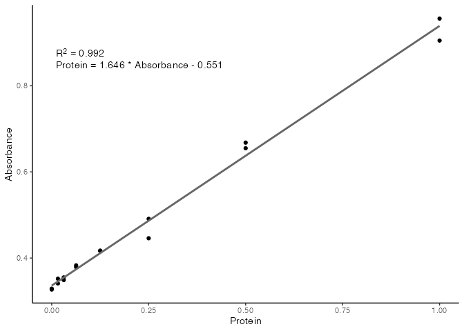

standard provides a simplified interface for fitting and using standard curves in R for work in biochemistry and molecular biology. Many assays conducted in laboratory environments require the creation of standard curves from known samples to then calculate the concentrations of unkown samples.
The workflow usually includes the fitting of a model (usually linear) to a set of readings (in the example below, absorbance @ 660 nm) from samples of known concentrations, extracting an equation from the model in the format y = mx + c and using this formula to calculate the unkown values.
This task can be conducted in Microsoft Excel, other spreadsheet programs, and various software packages that come with some plate readers and other pieces of laboratory equipment.
These approaches however don’t allow for automation of processing, or reproducibility and transparency of experiments.
Many wet-lab scientists would like to use the R programming language more in their work, including for the task of fitting and using standard curves. The model-fitting cababiliies and interface in R is enourmous however, and can often be overwhelming and not straight forward, when all a user needs to do is fit one model, and do some calculations with the fitted model. This is where standard comes in.
In standard we have reduced the process down to two main functions.
-
std_curve_fit()which takes the data from the known samples and fits a standard curve. -
std_curve_calc()which takes a standard curve a values from unkown samples, and calculates the concentrations of the unkowns based on the standard curve.
With these functions, the use of standard curves for molecular biology work in R can be streamlined, and importantly can remain repropducible and transparent.
Installation
Currently no published on CRAN, but install from GitHub with the following:
remotes::install_github("rforbiochemists/standard")Example
In the example below, we have the results of a Bradford assay, with known protein concentrations of our standards, and their corresponding A660 nm readings. See XXthis vignette on how to read these values in from an excel file or a .csv file. In this example we are just going to manually write in the values in the code.
Below we are doing the following:
- Creating vectors of the
protconcentrations &absconcentrations. - Combining them both into a
data.framecalledassay_data - Fitting a standard curve with
std_curve_fit() - Using the standard curve to calculate the unknowns with
std_curve_calc() - Plotting the final results with
plot().
library(standard)
# Protein concentrations of the standards used in the assay
prot <- c(0.000, 0.016, 0.031, 0.063, 0.125, 0.250, 0.500, 1.000,
0.000, 0.016, 0.031, 0.063, 0.125, 0.250, 0.500, 1.000)
# absorbance readins from the standards used in the assay
abs <- c(0.329, 0.352, 0.349, 0.379, 0.417, 0.491, 0.668, 0.956,
0.327, 0.341, 0.355, 0.383, 0.417, 0.446, 0.655, 0.905)
assay_data <- data.frame(
Protein = prot,
Absorbance = abs
)
head(assay_data)
Protein Absorbance
1 0.000 0.329
2 0.016 0.352
3 0.031 0.349
4 0.063 0.379
5 0.125 0.417
6 0.250 0.491our_std_curve <- std_curve_fit(
data = assay_data,
conc = Protein,
resp = Absorbance
)
summary(our_std_curve)
Call:
stats::lm(formula = .f, data = data)
Residuals:
Min 1Q Median 3Q Max
-0.048237 -0.013238 -0.008318 0.008180 0.067081
Coefficients:
Estimate Std. Error t value Pr(>|t|)
(Intercept) -0.55101 0.02031 -27.13 1.67e-13 ***
Absorbance 1.64558 0.03878 42.43 3.42e-16 ***
---
Signif. codes: 0 '***' 0.001 '**' 0.01 '*' 0.05 '.' 0.1 ' ' 1
Residual standard error: 0.03044 on 14 degrees of freedom
Multiple R-squared: 0.9923, Adjusted R-squared: 0.9917
F-statistic: 1801 on 1 and 14 DF, p-value: 3.421e-16We can see that internally, R has fitted a linear model to the data, and has printed a range of summary statistics. While these are useful for more complex modelling, we are mostly concerned with the R2 value, to tell how linear our standards are, and what the final equation is for calculating protein concentrations from the absorbance readings of unknown samples.
We can use the base plot() function to plot the standard curve with relevant information included on the plot.
plot(our_std_curve)
With the formula now known, you can either use this formula to manually calculate your protein concentrations from their absorbance values, or use the std_curve_calc() function which will take a standard curve from std_curve_fit() and a numeric vector of observtations (in this case the absorbance readings), and return a data frame of the calculated values for you.
unk <- c(0.554, 0.568, 0.705)
calc_unk <- std_curve_calc(
std_curve = our_std_curve,
unknowns = unk
)
calc_unk
# A tibble: 3 x 2
Absorbance Protein
<dbl> <dbl>
1 0.554 0.361
2 0.568 0.384
3 0.705 0.609You can even just use the plot() function on the output from std_curve_calc() to plot the calculted values onto your standard curve.
plot(calc_unk)